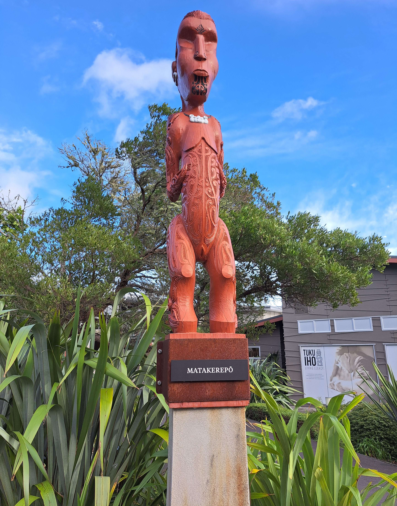
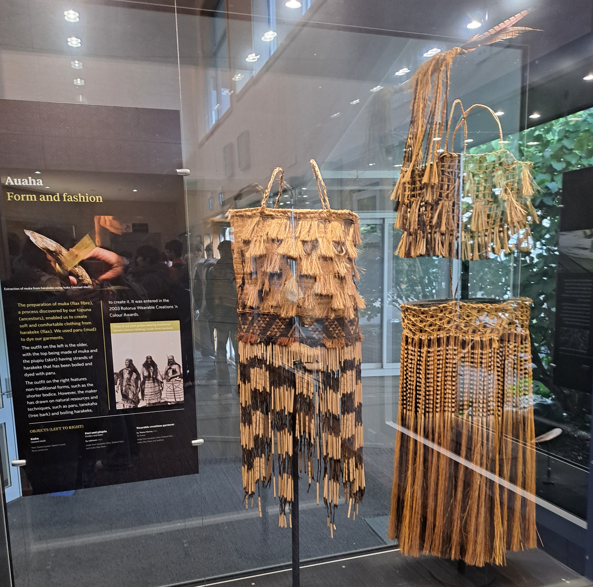

Te Puia is a world-renowned cultural and geothermal destination located within the historic Te Whakarewarewa Valley in Rotorua, New Zealand. Spanning 70 hectares of dramatic thermal landscapes, the site is home to the famous Pōhutu Geyser and boiling mud pools. It also houses the New Zealand Māori Arts and Crafts Institute, where traditional skills like carving and weaving are actively preserved and taught. For generations, Te Puia has proudly welcomed visitors to experience living indigenous heritage and natural wonders in one unforgettable place.

